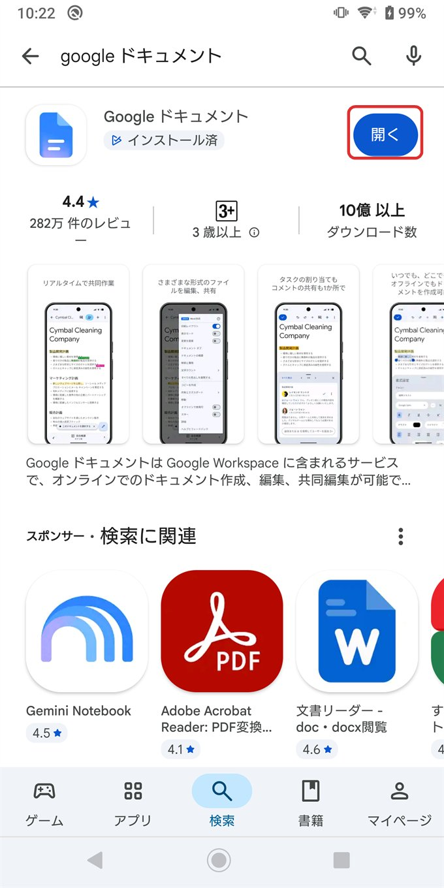
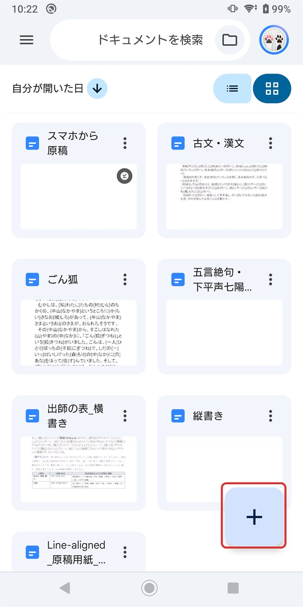
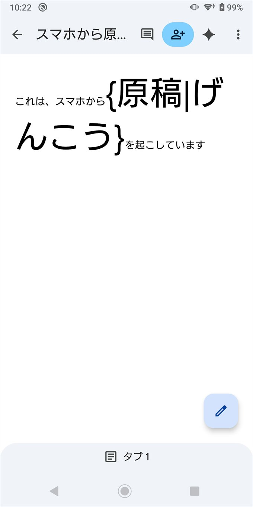
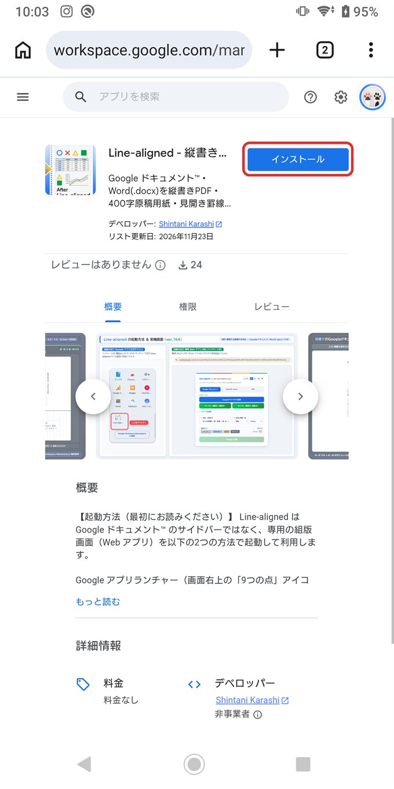
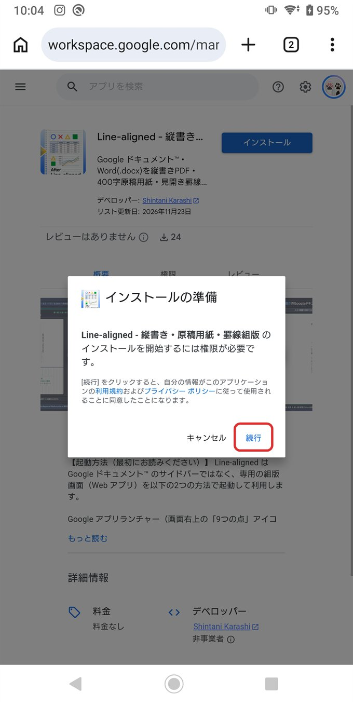
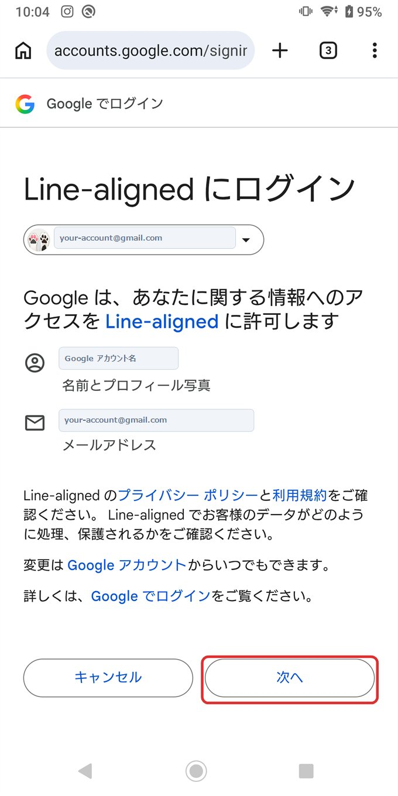
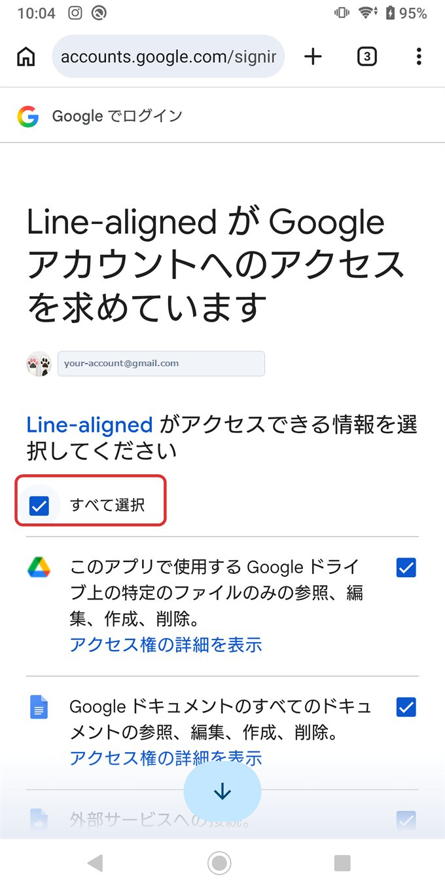
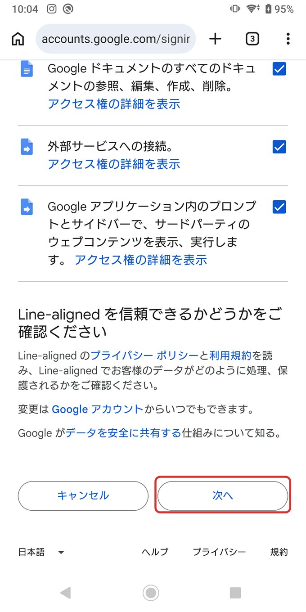
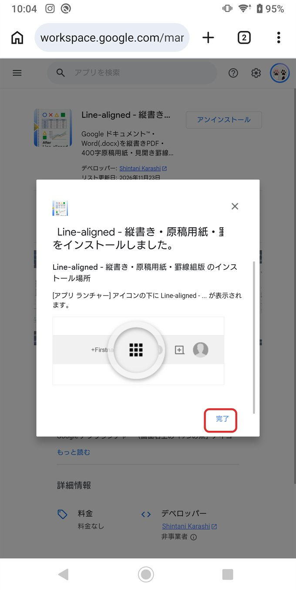
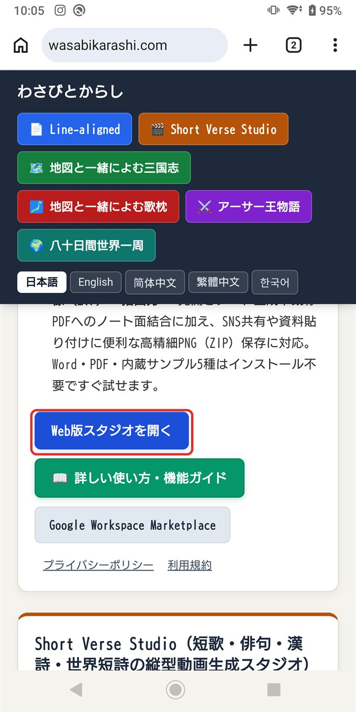

スマホの「Google ドキュメント」アプリで横書き原稿を書く Write Your Draft Horizontally in the Google Docs Mobile App 在手機「Google 文件」App 中以橫書撰寫原稿 스마트폰 「Google 문서」 앱에서 가로쓰기로 원고 작성
スマホの Google ドキュメントに「縦書き表示機能」はなくても大丈夫です。普段通りの横書きで入力するだけで、あとから『Line-aligned』が自動で縦書き・原稿用紙に組版します。（※画像はタップで拡大できます） Even though the Google Docs mobile app has no vertical writing mode, simply type horizontally as usual—Line-aligned converts your document into vertical typesetting or manuscript paper automatically. (*Tap any screenshot to zoom) 手機版 Google 文件沒有直書功能也沒關係！只需像平常一樣橫書輸入，之後『Line-aligned』會自動為您轉換為直書或四百字稿紙。（※點擊圖片可放大） 모바일 Google 문서 앱에 세로쓰기 기능이 없어도 괜찮습니다. 평소처럼 가로쓰기로 입력하기만 하면 Line-aligned가 자동으로 세로쓰기·원고지로 조판합니다. (*이미지를 탭하면 확대됩니다)



{原稿|げんこう} のように入力しておくと、縦書き・原稿用紙にした際に自動で美しいルビになります（傍点・漢文返り点タグにも対応）。
Write furigana inline like {原稿|げんこう} to render crisp vertical ruby automatically (emphasis dots & Kanbun tags also supported).
需要標註讀音處可輸入 {原稿|げんこう}，轉換為直書或稿紙時會自動生成精美右側注音（亦支援旁點與漢文訓讀標籤）。
루비(후리가나)가 필요한 곳은 {原稿|げんこう}처럼 입력하면 세로·원고지 변환 시 자동으로 루비가 붙습니다 (강조점·한문 태그도 지원).
【初回のみ約1分】Google ドライブ連携を無料インストールする [One-Time ~1 Min] Free Google Workspace Marketplace Install 【僅限首次約 1 分鐘】免費安裝 Google 雲端硬碟連動 [최초 1회 약 1분] Google 드라이브 연동 무료 설치
① 手順 2-4「アクセスを求めています」の画面では、最初チェックが空欄になっています。必ず『☑ すべて選択』をタップしてチェックを入れてください！（チェックを入れないとドライブから原稿を開けません）
② 手順 2-6 の完了画面に出る「9つの点アイコン（アプリランチャー）」のイラストはパソコン画面向けの案内です。スマホでは探す必要はありませんので、そのまま「完了」を押して閉じてください。
1. In Step 2-4 ("wants access to your Google Account"), checkboxes start unchecked—be sure to tap "☑ Select all" so Line-aligned can read your Google Docs!
2. In Step 2-6, Google shows an illustration of the PC "9-dots App Launcher"—ignore that on mobile and simply tap Done to close!
① 在步驟 2-4「要求存取您的 Google 帳戶」畫面中，預設未勾選任何項目，請務必點擊勾選『☑ 全選』！（未勾選將無法讀取雲端原稿）
② 步驟 2-6 完成畫面中的「9 個點圖示」為電腦版說明，在手機上無須尋找，直接點擊「完成」關閉即可。
① 단계 2-4 「액세스 요청」 화면에서는 처음에 체크박스가 비어 있습니다. 반드시 『☑ 모두 선택』을 탭하여 체크해 주세요! (체크하지 않으면 드라이브 원고를 불러올 수 없습니다)
② 단계 2-6 완료 화면에 나오는 「점 9개 아이콘(앱 런처)」 그림은 PC용 안내입니다. 스마트폰에서는 찾을 필요 없이 그대로 「완료」를 눌러 닫으시면 됩니다.



@gmail.com）を選び、「次へ」をタップします。
Select the same Google account (@gmail.com) used in your Docs app and tap Next.
選擇與步驟 1 文件 App 相同的 Google 帳戶（@gmail.com），點擊「下一步」。
STEP 1 문서 앱과 동일한 Google 계정(@gmail.com)을 선택하고 「다음」을 탭합니다.



スタジオを開いて、原稿用紙・縦書きPDF／PNG画像に出力する Open Studio & Export as Manuscript Paper, Vertical PDF, or PNG (ZIP) 開啟工作室，一鍵輸出四百字稿紙・直書 PDF／PNG 圖片 스튜디오를 열어 원고지·세로쓰기 PDF / PNG 이미지로 출력
スマホブラウザのプライバシー保護（サードパーティCookie制限）により、公式ページ（
wasabikarashi.com/linealigned/）上で連携状態が自動判定できない場合があります。その場合はポップアップ内の緑色ボタン『✅ インストール済みの方はこちら（Google連携スタジオを開く）』（または下の直通ボタン）をタップしてください。開いたページをブックマーク（またはホーム画面に追加）しておくと、次回から1タップで快適に使えます！
Mobile browser privacy settings (ITP) can prevent
wasabikarashi.com/linealigned/ from detecting your session inside an iframe. Simply tap the green "✅ Already Installed: Open Google-Linked Studio" button in the popup (or the button below) and bookmark that page for 1-tap access next time!
因手機瀏覽器的跨網站追蹤保護限制，有時無法在官網內自動判定登入狀態。只需點擊彈出視窗內的綠色按鈕『✅ 已安裝用戶請點此（直接開啟 Google 連動工作室）』（或下方直達按鈕），並將該頁加入書籤或主畫面，下次即可一鍵開啟！
모바일 브라우저의 개인정보 보호(쿠키 제한) 기능 때문일 수 있습니다. 팝업 안의 초록색 『✅ 이미 설치하신 분은 여기로 (Google 연동 스튜디오 열기)』 버튼(또는 아래 직통 버튼)을 탭하시고, 열린 페이지를 북마크(또는 홈 화면에 추가)해 두시면 다음부터 원탭으로 바로 열립니다!

wasabikarashi.com）の「Web版スタジオを開く」または上の緑色ボタンからスタジオを起動します。
Open Studio from wasabikarashi.com or via the green direct button above.
從官方首頁（wasabikarashi.com）點擊「Web版スタジオを開く」或上方綠色直達按鈕啟動工作室。
포털(wasabikarashi.com)의 「Web版スタジオを開く」 또는 위 초록색 버튼으로 스튜디오를 엽니다.
📂 3-2. 「Googleドライブから選択」でスマホで書いた原稿を選ぶ 📂 3-2. Tap "Select from Google Drive" & Pick Your Draft 📂 3-2. 點擊「從 Google 雲端硬碟選取」選擇剛寫好的原稿 📂 3-2. 「Google 드라이브에서 선택」으로 방금 쓴 원고 선택
青い「Googleドライブから選択」ボタンを押すと、STEP 1 でスマホのドキュメントアプリから書いた原稿（例：スマホから原稿）が一番上に表示されるのでタップして選びます。
Tap the blue Select from Google Drive button—the draft you just wrote in the Google Docs mobile app appears right at the top!
點擊藍色的「從 Google 雲端硬碟選取」按鈕，步驟 1 在手機 App 撰寫的原稿會顯示在最上方，點選即可載入。
파란색 「Google 드라이브에서 선택」 버튼을 누르면 STEP 1에서 작성한 원고가 맨 위에 표시됩니다.
📜 おすすめ設定①：『A4 原稿用紙』（標準 ／ 山葵山房 ／ クラシック） 📜 Preset A: "A4 Manuscript Paper" (Standard / Wasabi Sanbo / Classic) 📜 推薦設定①：『A4 稿紙』（標準 ／ 山葵山房 ／ 經典） 📜 추천 설정①: 『A4 원고지』 (표준 / 와사비산방 / 클래식)
赤い切替ボタンで「縦書き」➔「① 用紙・印刷形式」で『A4 原稿用紙』を選択！
・標準 (20×20)／クラシック (20×20)では、用紙の色［白 ／ クリーム紙］、中央の魚尾［黒魚尾 ／ 白魚尾 ／ 花魚尾 ／ なし］、罫線カラー（セピア・鶯色・朱色など）をボタンで自在に組み合わせられます。
・山葵山房 (20×10)を選ぶと、明治期の文豪特製十行原稿用紙をモチーフにした飾りアーチ枠・20字×10行の格調高い一枚物が完成します。
Switch to Vertical ➔ choose A4 Manuscript Paper! Pick Standard (20×20) or Classic (20×20) with White / Cream Paper, Solid / Hollow / Floral Gyobi / None, and olive/vermilion/sepia ink—or choose Wasabi Sanbo (20×10) for an ornate Meiji-literary arched 10-column leaf.
切換為「直書」➔ 於「① 紙張・列印格式」選擇『A4 稿紙』！可自由搭配［標準 (20×20) ／ 經典 (20×20)］、紙色［白 ／ 奶油紙］、魚尾［黑魚尾 ／ 白魚尾 ／ 花魚尾 ／ 無］與鶯色／朱色／復古棕格線；或選擇明治文豪風格裝飾拱框的『山葵山房 (20×10)』。
「세로쓰기」 ➔ 「① 용지·인쇄 형식」에서 『A4 원고지』 선택! 표준(20×20)·클래식(20×20)에서 [백색 / 크림지], [흑어미 / 백어미 / 꽃어미 / 없음], 줄 색상을 조합하거나, 메이지 문호풍 장식 아치 프레임의 『와사비산방(20×10)』을 선택할 수 있습니다.
📖 おすすめ設定②：『本文の罫線：なし ＋ ノートの罫線：あり』見開きノート 📖 Preset B: Clean Unruled Body + Ruled Study Note Spread 📖 推薦設定②：『內文格線：無 ＋ 筆記格線：有』跨頁筆記 📖 추천 설정②: 『본문 줄눈: 없음 + 노트 줄눈: 있음』 펼침 노트
『A3 / A4 見開きノート』を選び、「本文の罫線：なし」＋「ノートの罫線：あり（縦罫線／方眼）」にすると、本文ページは小説本のようにすっきり無地で組まれ、対向ページだけ手書きしやすい罫線・方眼ノートになります（iPad Goodnotes 等での学習・推敲にも最適！）。 Choose A3/A4 Spread Note with Body Lines: Off + Note Lines: On (Ruled / Grid) to get a clean book-like reading page paired with a ruled/grid handwriting note page—ideal for iPad Goodnotes or binder printing! 選擇『A3 / A4 跨頁筆記』並設定「內文格線：無」＋「筆記格線：有（格線／方格）」，即可讓內文如文庫本般清爽無框線，同時保留對頁的手寫格線筆記區（最適合 iPad Goodnotes 讀書與改稿！）。 『A3 / A4 펼침 노트』에서 「본문 줄눈: 없음」 + 「노트 줄눈: 있음(세로줄/방안)」을 선택하면 본문은 단행본처럼 깔끔한 무지로, 맞은편은 필기하기 좋은 줄·방안 노트로 완성됩니다.
🖼️ 3-3. SNS投稿には青い『PNG出力 (ZIP)』、印刷・保管には緑の『PDF出力』！ 🖼️ 3-3. Tap "Export PNG (ZIP)" for Social Media or "Export PDF" for Printing! 🖼️ 3-3. 社群發佈點藍色『匯出 PNG (ZIP)』，列印保存點綠色『匯出 PDF』！ 🖼️ 3-3. SNS 공유는 파란색 『PNG 저장 (ZIP)』, 인쇄·보관은 초록색 『PDF 출력』!
スマホで「PNG出力 (ZIP)」をタップすると、全ページが高精細PNG画像としてまとまってダウンロードされます。iPhone「ファイル」アプリや Android でタップして展開すれば、そのまま写真としてX（旧Twitter）などのSNSへ劣化なしで投稿できます！自宅プリンターやコンビニのネットプリントで印刷したいときは「PDF出力 / 印刷」をお使いください。 Tap Export PNG (ZIP) on your phone to save crisp 216 dpi PNG images of every page—unzip in iOS Files or Android with one tap to post directly on X / social media! Use Export PDF / Print for printing or tablet annotation. 在手機上點擊「匯出 PNG (ZIP)」即可下載全頁高解析 PNG 圖片，於 iPhone「檔案」App 或 Android 點擊解壓縮後，就能直接將原稿圖片清晰發佈至 X（Twitter）等社群平台！若需超商列印或平板閱讀請點「匯出 PDF / 列印」。 스마트폰에서 「PNG 저장 (ZIP)」을 탭하면 전 페이지가 고해상도 PNG 이미지로 저장되어 압축 해제 후 X(트위터) 등 SNS에 선명한 이미지로 바로 게시할 수 있습니다! 인쇄나 태블릿 보관 시에는 「PDF 출력 / 인쇄」를 이용해 주세요.